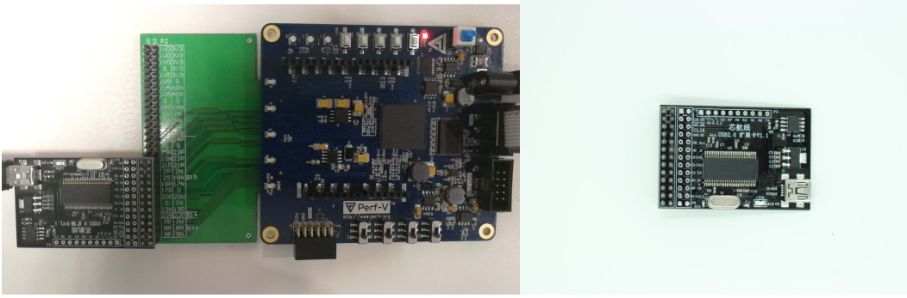
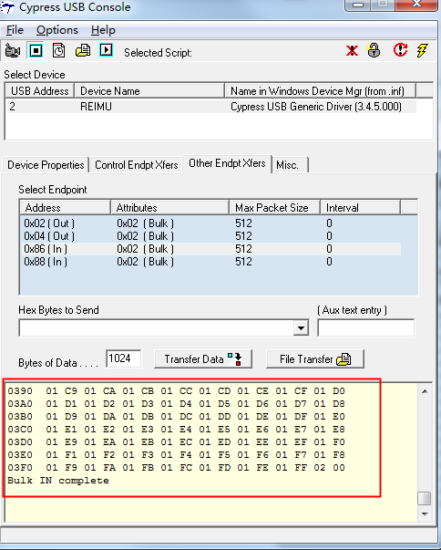

New Features of Perf-V Creative Board USB2.0 Application
USB(universal serial bus) is a kind of external bus standard used to standardize the connection and communication between computers and external equipment. It is the interface technology applied in PC field. USB interface supports plug-and-play and hot-plug functions of the device.
On the Perf-V creative board, USB data transmission can be realized by connecting USB2.0 module with high speed to 2.54mm expender. 
